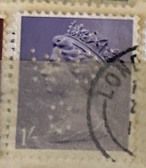
| SOURCE | TITLE| IMAGE MATCH | click to source page |
| HipStamp | Great Britain #630 5P Elizabeth used EGRADED XF 88 XXF | Great Britain, General Issue Stamp / HipStamp | 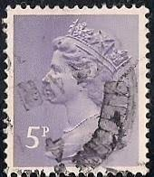 |
| eBay Canada | UK - 1971 - Queen Elizabeth II - 5P - #2533 | eBay | 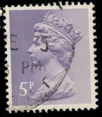 |
| Bob Shop | Looking for queen+elizabeth+2+coin+1981 Buy online on Bob Shop. | 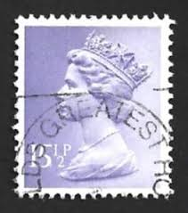 |
| eBay | Perfin on Great Britain Used Stamp A22P16F8722 | eBay | 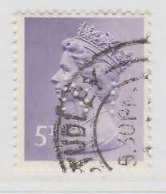 |
| Poppe Stamps | Poppe Stamps: Great Britain, 1971, X891, Numbers - Values And Letters - Characters, Queen Elizabeth Ii, Decimal Currency - stamps for sale by theme and country | 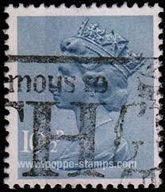 |
| Poppe Stamps | Poppe Stamps: Great Britain, 1971, X866, Numbers - Values And Letters - Characters, Queen Elizabeth Ii, Decimal Currency - stamps for sale by theme and country | 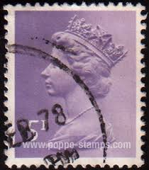 |
| Angelfire | The Perfin Society - MACHIN SURVEY | 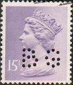 |
| Shutterstock | 5+ Thousand 英国女王 画 Royalty-Free Images, Stock Photos & Pictures | Shutterstock | 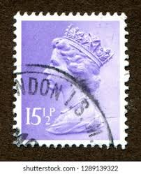 |
| Poppe Stamps | Poppe Stamps: Great Britain, 1971, X948, Numbers - Values And Letters - Characters, Queen Elizabeth Ii, Numbers - Values And Letters - Characters, Queen Elizabeth Ii, Decimal Currency, Decimal Currency - stamps | 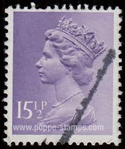 |
| Shutterstock | 1+ Hundred 2nd Class Stamp Uk Royalty-Free Images, Stock Photos & Pictures | Shutterstock | 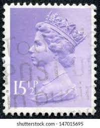 |
| seemystamps.com | See My Stamps! - A Place to Show Off Your Stamp Collection | Page 137 | 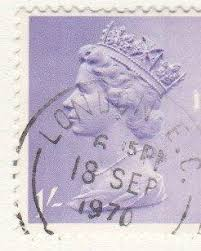 |
| stu1967 | ALL MACHIN PERFINS | 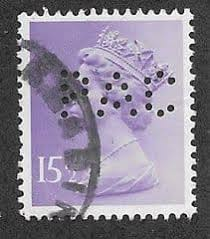 |
| tsfimagehost.net | alanl - The Stamp Forum Image Host | 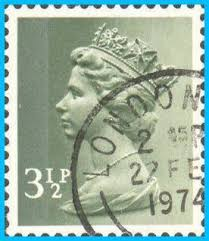 |
| Shutterstock | 91+ Thousand Queen Elizabeth Ii First Sovereign Royalty-Free Images, Stock Photos & Pictures | Shutterstock | 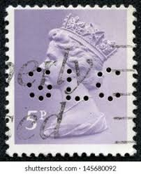 |
| HipStamp | Great Britain #630 5P Queen Elizabeth 2, Stamp used F-VF | Great Britain, General Issue Stamp / HipStamp | 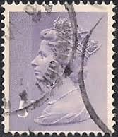 |
| HipStamp | Great Britain #630 5P Queen Elizabeth 2, Stamp used F-VF | Great Britain, General Issue Stamp / HipStamp | 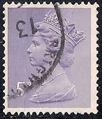 |
| HipStamp | Great Britain #MH237 1995 £1 Violet QEII Machin Head USED-Fine. | Great Britain, Back of Book (Other) - Machin Head Stamp / HipStamp | 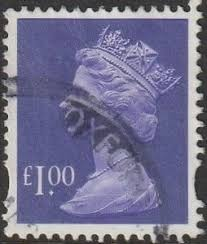 |
| Alamy | Machin stamp hi-res stock photography and images - Page 2 - Alamy | 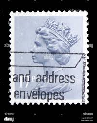 |
| eBay | Perfin Great Britain Used Stamp A25P44F19822 | eBay | 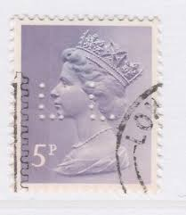 |
| Alamy | Postage stamp great britain queen hi-res stock photography and images - Page 11 - Alamy | 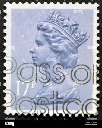 |
| Poppe Stamps | Poppe Stamps: Great Britain, 1971, X948, Numbers - Values And Letters - Characters, Queen Elizabeth Ii, Numbers - Values And Letters - Characters, Queen Elizabeth Ii, Decimal Currency, Decimal Currency - stamps | 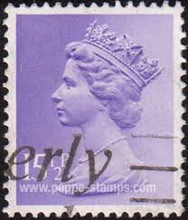 |
| Stamp Community Forum | Is This A Machin On Uncoated Paper? - Stamp Community Forum | 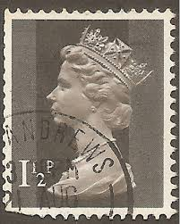 |
| lastdodo.com | V L Churchill & Co Ltd Perfin catalogue - LastDodo | 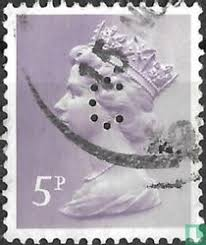 |
| eBay | Gran Bretaña 2016 Tarifa Cambio Definitivo Código M16L Fino Usado | eBay | 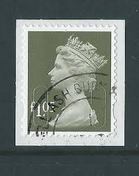 |
| Blogger.com | My Favorite Postcards: Piccadilly Circus, London, England in 1978 | 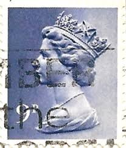 |
| Alamy | A vintage Queen Elizabeth II postage stamp featuring a British Cathedral on a white background Stock Photo - Alamy | 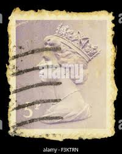 |
| eBay | Perfins Great Britain GB 1983, Pair QE II Sixteen Pence BC. MH94 | eBay | 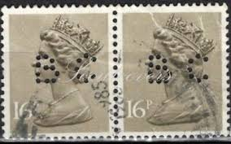 |
| Dreamstime.com | 116 Ii 1983 Stock Photos - Free & Royalty-Free Stock Photos from Dreamstime | 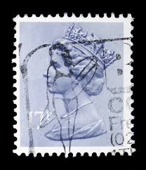 |
| HipStamp | Great Britain #MH135 28p Queen Elizabeth | Great Britain, General Issue Stamp / HipStamp | 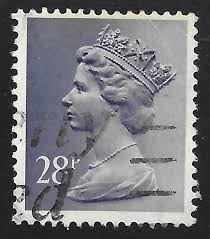 |
| perfinmania.hu | PUNCH:SAH – perfinmania | 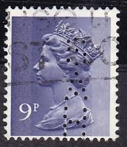 |
| eBay | Perfins Great Britain GB 1981, Pair QE II Fifteen & Half Pence PAC. MH92 | eBay | 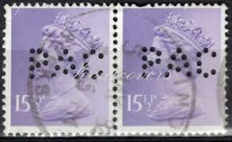 |
| HipStamp | Great Britain #636 20P Queen Elizabeth 2, used F-VF | Great Britain, General Issue Stamp / HipStamp | 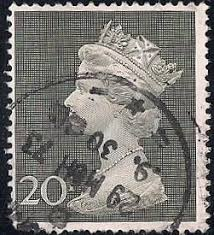 |
| Alamy | Used franked British UK stamp - 1.5p - Queen Elizabeth II Stock Photo - Alamy | 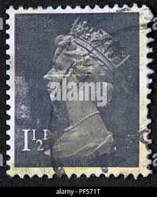 |
| eBay | Perfin Great Britain Used Stamp A25P44F19823 | eBay | 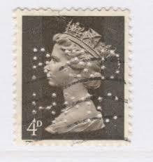 |
| HipStamp | Great Britain #MH230 41p Queen Elizabeth II | Great Britain, General Issue Stamp / HipStamp | 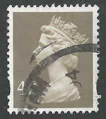 |
| Shutterstock | Queen Stamp: Over 11,267 Royalty-Free Licensable Stock Photos | Shutterstock | 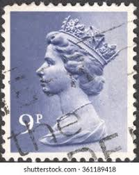 |
| norphil.co.uk | Norvic Philatelics Blog: Another case of a missing cylinder number - the new £1.05 stamp | 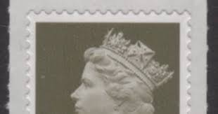 |
| HipStamp | GREAT BRITAIN 1993 QEII 29p Grey Machin SGY1693 FU | Great Britain, Stamp / HipStamp | 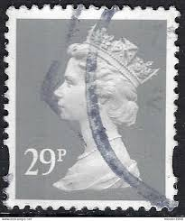 |
| eBay | GIBRALTAR, SCOTT # 1597-1602, MNH SET - ACCESSION 65th ANNIVERSARY OF REIGN 2016 | eBay | 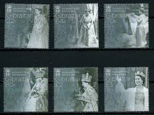 |
| eBay | Perfins Great Britain GB 1976, Pair QE II Nine Pence RG. MH66 | eBay | 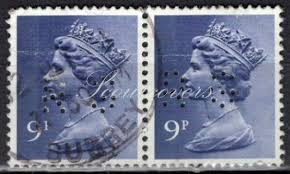 |
| eBay | 28p Denomination British Stamps for sale | eBay | 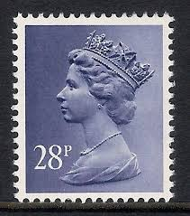 |
| Etsy | Queen Elizabeth 4d Stamp - Etsy | 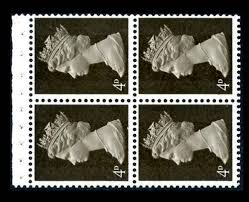 |
| HipStamp | Great Britain - Mh67 - Used - Scv-0.25 | Great Britain, Stamp / HipStamp |  |
| eBay | GREAT BRITAIN 2016 DEFINITIVE MACHIN CODE "O16R" EX 90th BIRTHDAY BOOKLET UM | eBay | 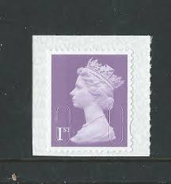 |
| Poppe Stamps | Poppe Stamps: Great Britain, 1971, X946, Numbers - Values And Letters - Characters, Queen Elizabeth Ii, Numbers - Values And Letters - Characters, Queen Elizabeth Ii, Decimal Currency, Decimal Currency - stamps |  |
| Amazon.com | Amazon.com: Gibraltar 1774-1779 (Complete.Issue.) unmounted Mint/Never hinged ** MNH 2017 Queen Elizabeth II. (Stamps for Collectors) British Royal Family (Diana, Charles, Elisabeth ..) : Toys & Games | 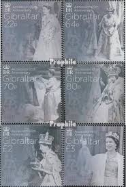 |
| eBay | Perfins Great Britain GB 1980, Pair QE II Seventeen Pence BC. MH97 | eBay | 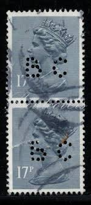 |
| eBay | 1 x GB USED 9p MACHIN DECIMAL SG X883 DECIMAL STAMP BARNET POSTMARK 2 AUG 1978 | eBay | 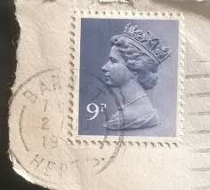 |
| eBay | GREAT BRITAIN 2016 DEFINITIVE MACHIN CODE "O16R" EX 90th BIRTHDAY BOOKLET FINE U | eBay | 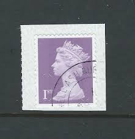 |
| eBay | Pre-Decimal 9p Denomination British Elizabeth II Stamps for sale | eBay | 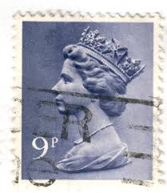 |
| eBay | Perfin Great Britain 1990 - ScMH98, 17p QEII Error* | eBay | 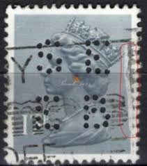 |
| eBay | Jersey 1232 Queen Königin Elisabeth II. ** (mnh) | eBay | |
| ebid.net | JAPAN, Supreme Court, yellow 1997, 80 Yen on eBid United States | 190197446 | |
| myshopify.com | Great Britain – Tagged "Booklet Pane FDC's" – coversoftheworld | |
| eBay | GIBRALTAR Sc 1597-1603 NH SET+S/S OF 2017 - QUEEN ELIZABETH - Sc$25.50 - (FJ25) | eBay | |
| eBay | Perfins Great Britain GB 1983, Strip of 3 QE II Sixteen Pence PAC. MH94 | eBay | |
| Mystic Stamp | MH92//94 - 1981-83 Great Britain - Mystic Stamp Company | |
| C-Suite Planning | UK - 1971 - Queen Elizabeth II - 5P - #2535 - C-Suite Planning™ - Executive & Entrepreneur Specialized Planning Firm | |
| eBay | Perfins Great Britain GB 1976, Pair QE II Nine Pence MGN. MH66 | eBay | |
| eBay | Perfins Great Britain GB 1976, Pair QE II Twenty Pence IT/Co. MH111 | eBay |